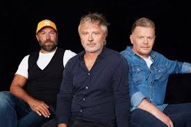
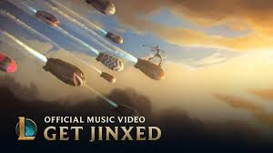
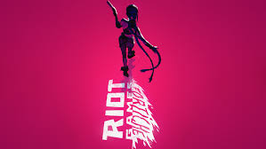
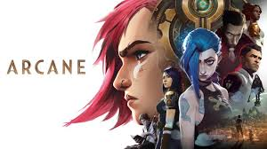
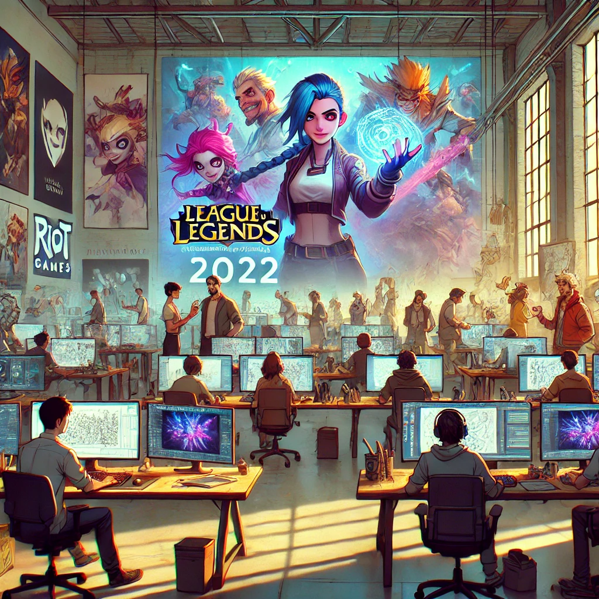

Histoire

Fondateurs de Fortiche Production
Jérôme Combe, Pascal Charrue et Arnaud Delord ont créé Fortiche en 2009 et ont nommé le studio d'animation d'après leur état d'esprit du moment (Fortiche signifie As). Dès lors, ils n'ont cessé de travailler à faire de Fortiche une référence en tant que studio d'animation au niveau mondial.

Les débuts et la fondation (2009-2013)
Fortiche a commencé avec des publicités, des clips musicaux, et des collaborations avec des entreprises de jeux vidéo. L’une de leurs premières œuvres notables a été la réalisation de clips pour des artistes comme Gorillaz. En 2013, Fortiche s'est fait connaître grâce à sa collaboration avec Riot Games pour le clip Get Jinxed, introduisant un personnage du jeu League of Legends.

Collaborations avec Riot Games et projets musicaux (2013-2018)
Suite au succès de Get Jinxed, Fortiche a réalisé plusieurs autres clips pour League of Legends, tels que Warriors (2014) et POP/STARS (2018). Leur travail, toujours innovant, a séduit un public international, renforçant leur collaboration avec Riot Games. Ces projets ont permis à Fortiche d'affiner son identité visuelle et d'expérimenter davantage avec des technologies de pointe dans l'animation

Succès international avec Arcane (2021)
En 2015, Fortiche Production commence la production de Arcane, une série dérivée de League of Legends, avec un budget estimé entre 60 et 80 millions d'euros. Pour ce projet, le studio, initialement une petite entreprise, s'agrandit et ouvre des antennes à Montpellier et aux Canaries, mobilisant environ 500 personnes au total. À sa sortie en 2021, Arcane est un immense succès critique et commercial, remportant neuf Annie Awards.

Expansion et perspectives futures
Fortiche continue d'innover et d'élargir son équipe. En 2022, Riot Games a acquis une part minoritaire du studio, renforçant encore leur partenariat stratégique. Fortiche travaille actuellement sur la saison 2 de Arcane et d'autres projets non révélés. Leur studio continue de s'imposer comme une référence dans l'industrie de l'animation, grâce à leur créativité et leur capacité à intégrer de nouvelles technologies.